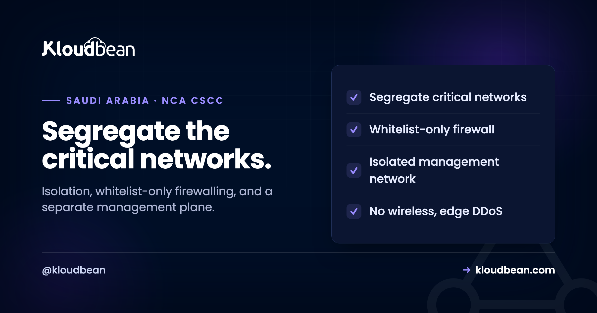

NCA CSCC Network Segmentation: Isolating Critical Systems the Right Way

If your systems fall under the NCA's Critical Systems Cybersecurity Controls, the network domain is one of the places a review gets specific and unforgiving. A flat network where everything can reach everything, one open security group, a database on a public IP, an admin panel exposed to the internet, is exactly what these controls exist to prevent. The CSCC network requirements are public and concrete, and most of them are infrastructure choices rather than mysteries. This guide walks the network controls in plain terms, and shows where a managed cloud delivers the infrastructure half and where the responsibility stays with you.
The NCA Critical Systems Cybersecurity Controls (CSCC-1:2019) require critical-system networks to be segregated and isolated (control 2-4-1-1), protected by whitelist-only firewall rules that deny by default (2-4-1-9), kept off wireless (2-4-1-4), and defended against DDoS (2-4-1-8), with a separate, isolated management network for privileged access (2-3-1-4). In practice that means separate networks per environment, a deny-all firewall that permits only what is needed, no public database, a bastion for admin access, and edge DDoS protection. A managed cloud can provide the infrastructure: private networking, per-environment isolation, whitelist firewalling, and DDoS at the edge. The application design and the governance around it stay yours. The CSCC document is public, so its control numbers can be cited directly.
Why segmentation is a CSCC cornerstone
The logic behind the network controls is the same logic behind a ship's watertight compartments: contain the damage.
A flat network, where every server can talk to every other server, means that one compromised component gives an attacker the run of the place. Segmentation breaks the environment into isolated zones so that a breach in one is contained rather than catastrophic, which for a critical national system is the difference between an incident and a disaster. That is why the CSCC devotes a control subdomain to it and why a reviewer looks hard here. The controls are not asking for anything exotic, they are asking you to stop running everything on one open network and instead isolate the parts that matter, restrict what can talk to what, and keep the management plane separate. The rest of this article is those requirements, one at a time.
Segregate and isolate critical-system networks (2-4-1-1)
The foundational control: critical-system networks must be separated and isolated from other networks.
In cloud terms, this maps directly to private networking and per-environment isolation. Your production critical system should sit in its own private network, separated from development, testing, and any non-critical systems, so that traffic cannot flow freely between them. Separate virtual private clouds and subnets per environment, production, QA, and development, are the standard way to achieve this, with the critical production network isolated from the rest. The principle underneath is that isolation is the default and connectivity is the exception you deliberately allow, which is the opposite of the flat network most projects start with. If you are new to the concept, what a VPC is covers the private-networking foundation this control rests on.
Whitelist-only firewalling, deny by default (2-4-1-9)
Segmentation is only real if the boundaries are enforced, and that enforcement is the firewall.
The CSCC requires firewall rules to work on a whitelisting basis: deny everything by default, and explicitly permit only the specific traffic that is genuinely needed. This is the same deny-by-default posture that is good practice everywhere, elevated to a requirement for critical systems. In practice it means each zone allows only the connections it must, the web tier can reach the application tier, the application tier can reach the database, and nothing talks to anything it has no reason to. Broad "allow all" rules, or a security group open to the world, are precisely what this control forbids. The host-level side of this discipline, closing unused ports and banning abusive traffic, is covered in the firewall and brute-force guide, and reviews of these rules should happen regularly rather than being set once and forgotten.
A separate management network for privileged access (2-3-1-4)
How administrators reach the system is itself a control, and a commonly overlooked one.
The CSCC calls for an isolated management network for privileged accounts, which means administrators should not reach critical systems over the same paths as ordinary traffic, and certainly not by exposing SSH or admin panels to the open internet. The standard implementation is a dedicated bastion, or jump server, that privileged users connect to first, with multi-factor authentication, and from which they reach the isolated systems. Direct administrative access from the internet is blocked. This keeps the most powerful access on a controlled, monitored path rather than a public one, and it pairs with the remote-access requirements covered in the CSCC remote access guide. The theme is consistent with the rest of the domain: the more powerful the access, the more isolated and controlled the route to it must be.
No wireless, and DDoS protection (2-4-1-4, 2-4-1-8)
Two more specific network requirements round out the domain.
The controls prohibit wireless connectivity to critical-system networks (2-4-1-4), because wireless expands the attack surface in ways that are hard to contain, so critical systems stay on wired, controlled paths. And they require protection against distributed denial-of-service attacks (2-4-1-8), because availability is part of security for a critical national system: an attacker who cannot get in may still try to knock you offline. DDoS defence belongs at the edge, upstream of your servers, where volumetric floods can be absorbed before they reach the infrastructure, as explained in DDoS protection. Together with segmentation and whitelisting, these controls describe a network that is isolated, minimal in what it exposes, and resilient to being overwhelmed.
Where a managed cloud fits, and where you own it
Most of the network domain is infrastructure, which is exactly where a managed platform carries real weight, so the split is favourable here.
A managed cloud can provide the infrastructure half of these controls: private networking to isolate critical systems, separate networks and subnets per environment, whitelist-only firewall rules that deny by default, managed databases kept on a private network with no public IP, and DDoS protection at the edge. On Kloudbean these are available as platform capabilities, private networking and per-environment isolation, a baseline host firewall, managed databases reachable only from the application layer, and Cloudflare for edge DDoS defence, delivered on managed engagements to the standard these controls call for. The honest boundary: the platform can give you a segmented, whitelisted, DDoS-protected network, but the architecture decisions, which systems are critical, how the tiers are drawn, what each rule permits, and the governance and review of it all, remain yours. The CSCC document is public and open, so you can cite these control numbers directly in your own documentation, and the wider overview of how the framework maps to infrastructure is in the NCA CSCC guide.
NCA CSCC Network Segmentation and its neighbours
This is the network domain of a bigger framework: start with the NCA CSCC guide, and prepare with the critical systems hosting checklist. The controls here build on private networking, host-level firewalling, DDoS protection, and remote access controls, plus the recurring testing cadence in CSCC vulnerability assessment and penetration testing. For where the data lives, data residency in Saudi Arabia.
Build the segmented network the controls expect.
Kloudbean can deliver private networking, per-environment isolation, whitelist-only firewalling, private-only managed databases, and edge DDoS protection on managed engagements, in-Kingdom on the Dammam region. Start the conversation at kloudbean.com, and read the framework overview in the NCA CSCC guide.
Per-environment isolation · Whitelist firewalling · Edge DDoS · In-Kingdom
FAQ
What does CSCC control 2-4-1-1 require?
It requires critical-system networks to be segregated and isolated from other networks, so that traffic cannot flow freely between critical and non-critical systems. In cloud terms this means putting the critical production system in its own private network, separated from development, testing, and other systems, typically using separate virtual private clouds and subnets per environment. Isolation becomes the default and any connectivity between zones is a deliberate, permitted exception rather than the norm.
What does whitelist-only firewalling mean?
It means the firewall denies all traffic by default and permits only the specific connections that are explicitly needed, rather than allowing everything except a blocklist. For critical systems, CSCC control 2-4-1-9 requires this posture. In practice each network zone allows only necessary connections, such as the web tier reaching the application tier and the application tier reaching the database, while everything else is blocked. Broad allow-all rules or a security group open to the internet are exactly what this control prohibits.
Why does CSCC require a separate management network?
Because privileged access is the most dangerous thing to expose, control 2-3-1-4 calls for an isolated management network so administrators do not reach critical systems over ordinary or public paths. The usual implementation is a bastion or jump server that privileged users connect to first with multi-factor authentication, with direct administrative access from the internet blocked. This keeps powerful access on a controlled, monitored route rather than a publicly reachable one, reducing the risk of an exposed admin surface being attacked.
Does CSCC really prohibit wireless for critical systems?
Yes. Control 2-4-1-4 prohibits wireless connectivity to critical-system networks, because wireless broadens the attack surface in ways that are difficult to contain and control. Critical systems are expected to stay on wired, controlled network paths. For a cloud-hosted critical system this is generally satisfied by the nature of the infrastructure, but it is a requirement to be aware of when designing how any on-premises components connect.
How does a managed cloud help with CSCC network controls?
It provides the infrastructure half: private networking to isolate critical systems, separate networks per environment, whitelist-only firewall rules that deny by default, managed databases kept private with no public IP, and DDoS protection at the edge. That covers a large part of the network domain as platform capability rather than something you build by hand. What remains yours is the architecture, deciding which systems are critical and how the tiers and rules are drawn, and the governance and regular review of the configuration.
Can I cite CSCC control numbers in my documentation?
Yes. The NCA's Critical Systems Cybersecurity Controls document is published openly, marked as open with no sharing restrictions, so its control numbers and requirements can be quoted and referenced directly in your own compliance documentation. That makes it straightforward to map each infrastructure decision to the specific control it addresses, such as tying private networking to 2-4-1-1 or whitelist firewalling to 2-4-1-9, which is exactly the kind of traceability a reviewer looks for.
What is the difference between this and a normal VPC setup?
The mechanics are similar, private networks, subnets, and firewall rules, but CSCC raises them from good practice to explicit requirements with specific expectations: segregation of critical systems, deny-by-default whitelisting, an isolated management network, no wireless, and DDoS protection, all reviewed regularly. A normal VPC setup might satisfy some of these by default, but a critical-systems deployment has to satisfy all of them deliberately and be able to demonstrate it, which is why the design and documentation matter as much as the configuration.
Does network segmentation on its own make a critical system compliant?
No. Network segmentation is one control domain within the CSCC, which spans identity and access, encryption, logging, backups, vulnerability management, and more, and CSCC itself extends the ECC framework. A well-segmented network is necessary but not sufficient. It is one important piece of a much larger picture, and compliance is assessed across the whole system and organisation, so segmentation should be treated as a foundation to build the other controls on rather than a finish line.